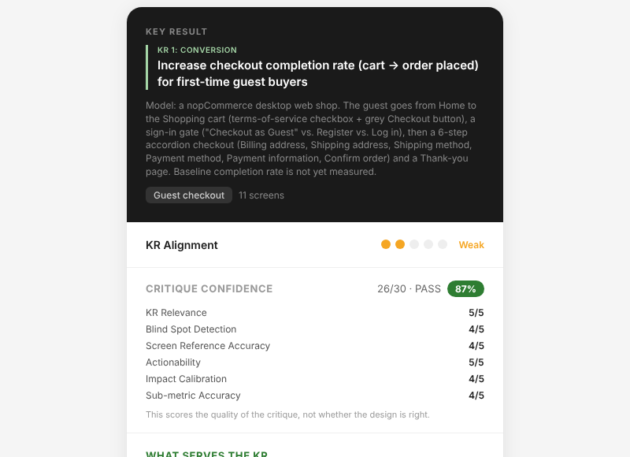

Until now our review applied this method by hand. Here an open-source AI design-review plugin was installed and run on the same 11 blurred checkout screenshots, with no access to our findings. A second, read-only judge then graded its critique. Run 15 Nov 2026.

Open the critique card (15 numbered items, each with "How did I get this?") · Open the review board (screens left, critique right)
This rates how trustworthy the critique is, not whether the design ideas will work. The judge opened every screenshot and checked each reference.
| # | AI review: what to reconsider | AI review | My finding | Verdict | Why |
|---|---|---|---|---|---|
| 1 | Terms checkbox blocks Checkout; the pop-up can't be accepted from inside | HIGH | E8 Medium | AI stricter | I rated it Medium because ticking the box fixes it; the judge also called HIGH "arguably too high". |
| 2 | Guest option looks secondary on the sign-in gate | HIGH | E10 High | Agree | Same finding, same severity. The AI review adds that the cursor starts in the login Email field. |
| 3 | Cash on Delivery +7.00 is pre-selected; total jumps 10.00 → 17.00 on Confirm | HIGH | E15 E17 High | AI adds | Same surprise cost, but the AI review spotted the cause I missed: COD is the default choice. Logged as E25. |
| 4 | About 9 clicks over 8 screens for one item | HIGH | E16 Medium | AI stricter | I flagged the empty step only. The AI review counts the whole flow; the judge says field burden matters more than clicks. |
| 5 | Placeholder copy makes the shop look unfinished | MEDIUM | E11 E13 E19 Medium | Agree | Same three strings. |
| 6 | Checkout and Confirm look like minor grey buttons; no total by Confirm | MEDIUM | E18 Low | AI stricter | I noted the Confirm button only. The AI review adds the cart's Checkout button and "Place order · 17.00". |
| 7 | Full navigation and coupon boxes stay open during checkout | MEDIUM | E12 E9 Low | AI stricter | Same finding; the AI review ranks it one level higher. |
All 7 AI review problems match a finding I already had. None contradicts the evidence; the AI review rates severity higher on 4 of them.
| Mine | Finding | Severity | Why the AI review missed it |
|---|---|---|---|
| E7 | Cart shows shipping 0.00 before any address | High | The AI review listed the cart price breakdown as a strength. The judge flagged this as a blind spot. |
| E19 / E2 | No delivery date anywhere in the flow | High | The AI review only mentions dates inside suggestion 11, not as a problem. |
| E22 | Thank-you page has no delivery estimate or email note | Medium | The AI review saw the thank-you page as a clear success state. |
| E24 | Purchase order signals business buyers | Medium | Out of scope for a single-KR critique. |
| E2 E3 | Product page: no delivery, payment or returns info; no currency | High | The product page was not in the 11 screens, so the AI review could not see it. |
apply guest-checkout 9,10 to mock up the guest-first sign-in and the no-fee default, then re-review to see if the score moves.